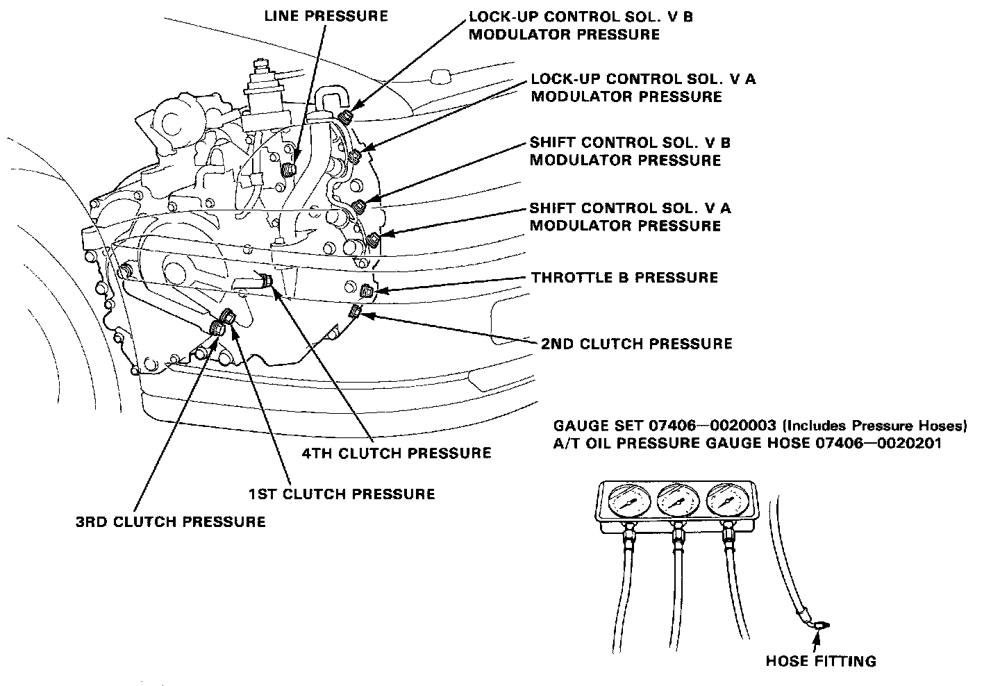
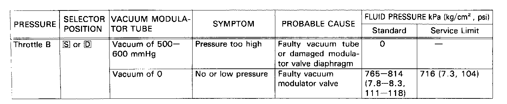

Throttle B Pressure Measurement


- Set the parking brake securely, and block both rear wheels.
- Raise the front of the car and support with safety stands.
- Allow the front wheels to rotate freely.
- Run the engine at 2,000 rpm.
- Connect a vacuum pump to the negative tube of the vacuum modulator valve, and apply a vacuum of 500-600 mmHg (19.7-23.6 inHg).